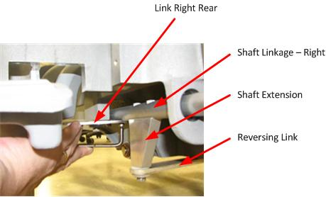
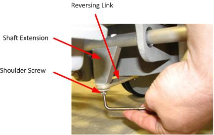
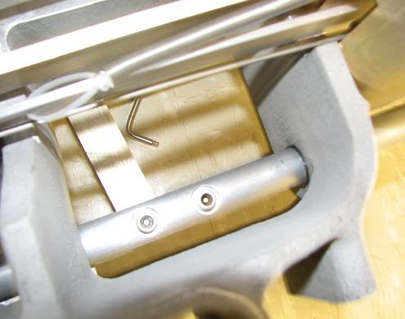
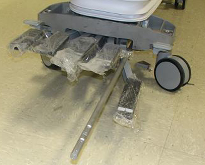
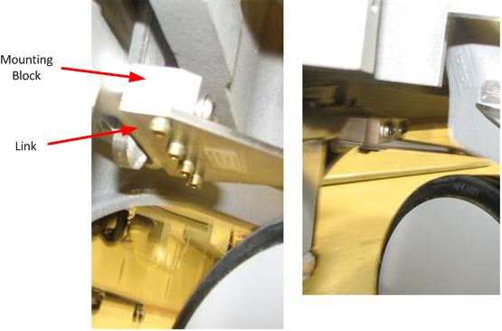
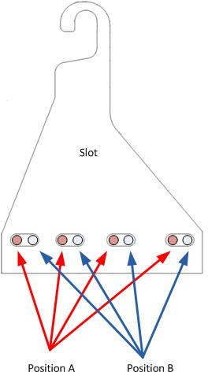

Operating Documentation
Direction 5670006, Rev# 1
Discovery MR750w GEM Service Methods
Module Version 5.0, Version Date 6/6/11
Operating Documentation |
| Required Persons | Preliminary Reqs | Procedure | Finalization |
|---|---|---|---|
| 1 | Not Applicable | 30-60 | 5 mins |
This procedure explains how to replace various components in the Table braking system and various braking system checks at the completion of the replacements. The replacements and functions covered in this document include:
Shaft Linkage-Right, Shaft Extension, and Bearing IGUS Replacement
Caster Pin Actuator Replacement
Finalization, Step 1 (Braking system checks)
| Item | Qty | Effectivity | Part# | Manufacturer | |
|---|---|---|---|---|---|
| Non-Magnetic Tool Kit | 1 | - | 5113258 or 5112581 | - | |
| Item | Qty | Effectivity | Part# | Manufacturer |
|---|---|---|---|---|
| Cable Ties | As needed. | - | - | - |
| Loctite 242 | 0.5 CC | - | 46-170686P1 | - |
| Item | Qty | Effectivity | Part# | Manufacturer | |
|---|---|---|---|---|---|
| Shoulder Screw, IN ¼-20 x 3/8, SS18-8 | 3 | - | See itemized Table parts list in FRU Manual. | - | |
| Shoulder Screw, IN ¼-20 x 5/8, SS18-8 | 2 | - | See itemized Table parts list in FRU Manual. | - | |
| Nylon Washer | 9 | - | See itemized Table parts list in FRU Manual. | - | |
| Rubber Washer | 1 | - | See itemized Table parts list in FRU Manual. | - | |
| Shaft Linkage-Right | 1 | - | See itemized Table parts list in FRU Manual. | - | |
| Shaft Linkage-Left | 1 | - | See itemized Table parts list in FRU Manual. | - | |
| Link - Reversing | 1 | - | See itemized Table parts list in FRU Manual. | - | |
| Link - Left Rear | 1 | - | See itemized Table parts list in FRU Manual. | - | |
| Link - Left Front | 1 | - | See itemized Table parts list in FRU Manual. | - | |
| Link - Right Rear | 1 | - | See itemized Table parts list in FRU Manual. | - | |
| Link - Right Front | 1 | - | See itemized Table parts list in FRU Manual. | - | |
| Bearing IGUS MCI-12-02 | 4 | - | See itemized Table parts list in FRU Manual. | - | |
| Shaft Extension | 2 | - | See itemized Table parts list in FRU Manual. | - | |
| Mounting Block | 1 | - | See itemized Table parts list in FRU Manual. | - | |
| Pin - Actuator | 4 | - | See itemized Table parts list in FRU Manual. | - | |
| ||||
| PERSONAL INJURY POSSIBILITY! | ||||
| SEVERE PERSONAL INJURY CAN OCCUR IF TABLE IS ACCIDENTALLY LOWERED DURING MAINTENANCE. | ||||
| WHEN PERFORMING MAINTENANCE ON THE TABLE IN ITS UP POSITION, ENSURE THAT THE LOCK BAR IS SAFELY IN PLACE. |
This procedure is written for the right side of the Table. The procedure for the left side of the Table, as seen in Illustration 1, is similar.
Undock the Table and remove it from the magnet room.
Illustration 1: Table Covers

Remove both Lower Base Side Covers by removing the two screws that fasten each Cover to the Table assembly. Lift up and pull out the Covers. Note that Velcro strips attach the Lower Base Side Covers to the Bellows. See Patient Table Upper and Lower Base Side Cover Removal for more information.
Remove Front and Rear Base Covers by removing the two front screws and the two screws that attach the Bellows.
Illustration 2: Rear Base Cover

Raise the Table to its maximum height.
Lower the Table’s Lock Safety Bar. Lower the Table to ensure all weight is resting on the lock bar.
Illustration 3: Table Lock Safety Bar

Illustration 4: Isometric Assembly

Remove the screws that attach the Shaft Linkage-Right to the Link-Right Rear, located at the right rear side of the Table. Also remove the two screws that attach the Link-Right Front on the opposite side of the Table in the same location.
Illustration 5: Shaft Linkage, Right Rear

Remove the Shaft Extension from the Shaft Linkage Right.
Remove the shoulder screw, as shown below.
Illustration 6: Removing the Shoulder Screw

For best access to Shaft Extension mounting screws, put the Table brake in "free rotate" position.
Illustration 7: Brake Positions

Remove the Shaft Extension mounting screws. (If more space is needed to access the Shaft Extension mounting screws or for better torque, rotate the bottom of the Shaft Extension out.)
Illustration 8: Shaft Extension Mounting Screws

Illustration 9: Removing Shaft Extension Screws

If replacing the Shaft Extension, install the new Shaft Extension. Apply Loctite when reinstalling the mounting screws. Otherwise, continue on to the next step.
Press the lower pedal to create space to remove the Shaft Linkage through the rear of the Table.
Illustration 10: Removing the Shaft Linkage

If replacing front or rear bearing IGUS, remove the bearing IGUS by hand and replace as required.
Illustration 11: Bearing IGUS

Press the lower pedal to create space and replace the Shaft Linkage through the rear of the Table.
Replace the Shaft Extension in the Shaft Linkage Right.
For best access to Shaft Extension mounting screws, put the Table brake in "free rotate" position.
Replace the Shaft Extension mounting screws. (If more space is needed to access the Shaft Extension mounting screws or for better torque, rotate the bottom of the Shaft Extension out.) Apply Loctite when reinstalling the mounting screws.
Replace the shoulder screw.
Replace the screws that attach the Shaft Linkage-Right to the Link-Right Rear, located at the right rear side of the Table. Also replace the two screws that attach the Link-Right Front on the opposite side of the Table in the same location.
Raise the Table and raise the Lock Safety Bar for normal operation.
Replace both the Front and Rear Base Covers. Reinstall the two front screws and the two screws that attach the Bellows.
Replace both Lower Base Side Covers. Reinstall the two screws that fasten each Cover to the Table assembly. Note that Velcro strips attach the Lower Base Side Covers to the Bellows.
Undock the Table and remove it from the magnet room.
See Illustration 4 and Illustration 6 for the location of the shoulder screws. Shoulder screws are accessible from the bottom of the Table.
| NOTE: | There are plastic washers on both sides of the mounting holes. Take care to prevent damaging the washers during the replacement procedure. Also, both outer shoulder screws have brass washers installed. See Illustration 6. |
Replace the Reversing Link bar and shoulder screws as required. Tighten the shoulder screws. The shoulder screw will allow some movement of the reversing bar when installed.
Undock the Table and remove it from the magnet room.
See Illustration 4 and Illustration 5. The block assembly is attached to the Shaft Linkage-Left using two screws and the Link-Left Rear with four bolts. Remove the bolts as required. See the illustration below.
Illustration 12: Left Rear Link and Mounting Block

Replace the Shaft Linkage-Left using two screws and the Link-Left Rear with four bolts. Apply Loctite when reinstalling the bolts.
The pin actuator is a threaded pin that bolts into the caster arm.
Loosen and remove the caster pin actuator. See the following illustration.
Illustration 13: Caster Pin Actuator

Replace the caster pin actuator. Apply Loctite when reinstalling.
Raise the Table Lock Safety Bar for normal operation.
Apply the wheel brake in the “full lock” position as shown in Illustration 7 and confirm that each wheel is locked. Try to rotate the Table left and right from each end. No wheel should allow movement.
If a wheel does turn, consider adjusting the associated Link from position A to position B.
Illustration 14: Slot Position A - Position B

Put the wheel brake in "free rotate" position. Rotate the Table left and right. Confirm that each wheel turns.
Put the wheel brake in the “steer lock” position. Rotate the Table left and right. Confirm that the rear wheels swivel and the front wheels remain in a locked position.
Verify proper operation of the Table.
Dock the Table.
Verify proper up/down Table motion.
When Table is in fully raised position, verify that the Table is level with the Bridge.
Verify that raising Table to full height results in LPCA automatically driving out to engage Cradle.
When Table is in fully raised position, verify that Cradle and LPCA can be advanced normally into bore.
Verify that lowering the Table results in automatic retraction of LPCA into Bridge.
Verify normal Cradle and LPCA motion from “home” position to end of travel on Bridge using enclosure In Fast and Out Fast buttons at the Operator's Console.